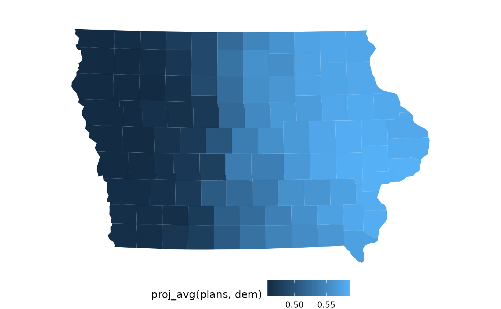
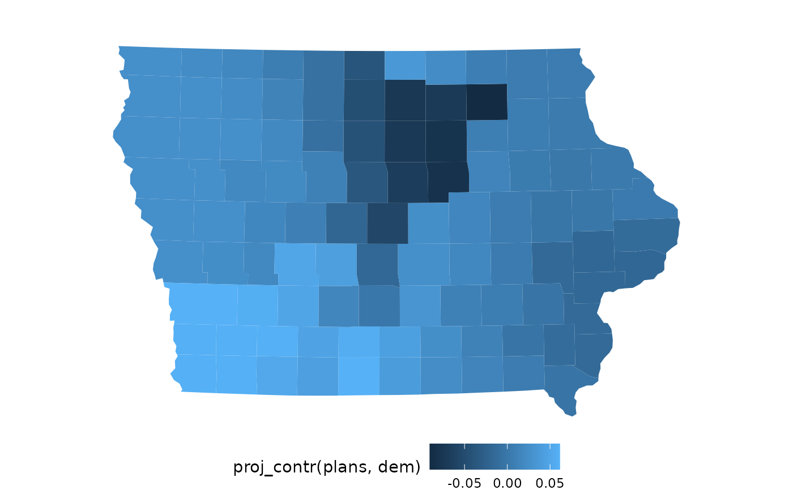
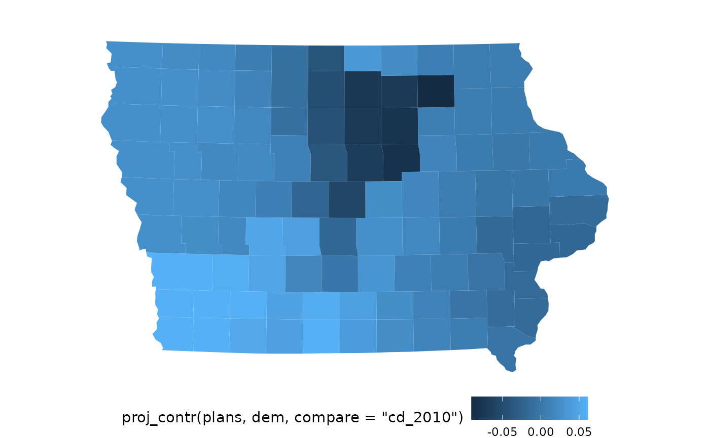

Calculate Projective Distributions, Averages, and Contrasts for a Summary Statistic
Source:R/proj.R
proj.RdThe projective distribution of a district-level summary statistic (McCartan 2024) is the distribution of values of that statistic across a set of plans for the district each precinct belongs to. The projective average of a statistic is the average value of the projective distribution in each precinct. A projective contrast is the difference between the projective average for a single plan and the projective average for an ensemble of sampled plans.
It is very important to properly account for variation in the projective
distribution when looking at projective contrasts. The pfdr argument to
proj_contr() will calculate q-values for each precinct that can be used to
control the positive false discovery rate (pFDR) to avoid being misled by
this variation. See redist.plot.contr_pfdr() for a way to automatically
plot projective contrasts with this false discovery rate control.
Usage
proj_distr(plans, x, draws = NA)
proj_avg(plans, x, draws = NA)
proj_contr(plans, x, compare = NA, draws = NA, norm = FALSE, pfdr = FALSE)Arguments
- plans
A redist_plans object.
- x
A district-level summary statistic calculated from the
plansobject. Tidy-evaluated inplans.- draws
which draws/samples to include in the projective distribution.
NULLwill include all draws, including reference plans. The special valueNAwill include all sampled (non-reference) draws. An integer, logical, or character vector indicating specific draws may also be provided.- compare
The plan to compare to the rest of the ensemble (which is controlled by
draws). Defaults to the first reference plan, if any exists- norm
If
TRUE, normalize the contrast by the standard deviation of the projective distribution, precinct-wise. This will make the projective contrast in terms of z-scores.- pfdr
If
TRUE, calculate q-values for each precinct that can be used to control the positive false discovery rate (pFDR) at a given level by thresholding the q-values at that level. Q-values are stored as the"q"attribute on the returned vector. Requires thematrixStatspackage be installed.
Value
proj_distr: A matrix with a row for each precinct (row in the map
object) and a column for every draw described by draws.
proj_avg: A numeric vector of length matching the number of
precincts.
proj_contr: A numeric vector of length matching the number of
precincts, optionally with a "q" attribute containing q-values.
References
McCartan, C. (2024). Projective Averages for Summarizing Redistricting Ensembles. arXiv preprint. Available at https://arxiv.org/pdf/2401.06381.
Examples
data(iowa)
map <- redist_map(iowa, existing_plan = cd_2010, pop_tol = 0.01)
plans <- redist_smc(map, 50, silent = TRUE)
plans$dem <- group_frac(map, dem_08, tot_08, plans)
proj_distr(plans, dem)[ ,1] # a 99-by-50 matrix, just showing first column
#> [1] 0.4545314 0.4545314 0.5528518 0.5528518 0.4545314 0.5528518 0.5528518
#> [8] 0.5395505 0.5528518 0.6058231 0.4545314 0.5528518 0.4545314 0.5395505
#> [15] 0.4545314 0.6058231 0.5528518 0.4545314 0.5528518 0.4545314 0.4545314
#> [22] 0.6058231 0.6058231 0.4545314 0.5395505 0.5528518 0.4545314 0.6058231
#> [29] 0.5528518 0.4545314 0.6058231 0.4545314 0.5528518 0.5528518 0.5395505
#> [36] 0.4545314 0.5395505 0.5528518 0.5395505 0.4545314 0.4545314 0.5395505
#> [43] 0.4545314 0.5528518 0.5528518 0.4545314 0.4545314 0.5528518 0.6058231
#> [50] 0.5395505 0.5528518 0.6058231 0.6058231 0.5528518 0.4545314 0.5528518
#> [57] 0.6058231 0.5528518 0.4545314 0.4545314 0.4545314 0.5528518 0.5395505
#> [64] 0.5528518 0.4545314 0.5528518 0.4545314 0.5528518 0.4545314 0.5528518
#> [71] 0.4545314 0.4545314 0.4545314 0.4545314 0.4545314 0.4545314 0.5395505
#> [78] 0.4545314 0.5528518 0.4545314 0.5395505 0.6058231 0.4545314 0.4545314
#> [85] 0.5395505 0.5528518 0.4545314 0.4545314 0.5528518 0.5528518 0.4545314
#> [92] 0.5528518 0.4545314 0.4545314 0.4545314 0.5528518 0.4545314 0.5528518
#> [99] 0.4545314
plot(map, proj_avg(plans, dem))

plot(map, proj_contr(plans, dem))

plot(map, proj_contr(plans, dem, compare="cd_2010"))
